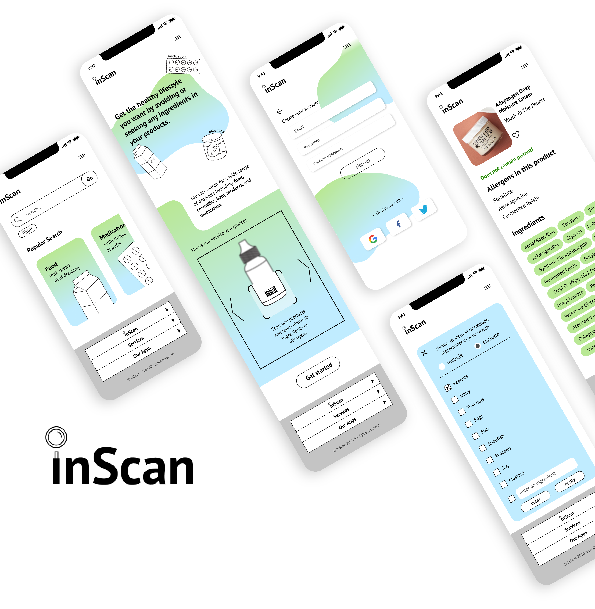

inScan
Figma, Illustrator
Fall 2020

As a semester-long project for an interaction design course, students were asked to design a web-based solution to a unique problem that they face in their life.
Since I have 2 siblings who are allergic to certain ingredients in food/medication, I decided to design a website that would help them with their allergies.
To arrive at the final prototype, I conducted interviews, benchmarked against existing service, created personas, defined user's roles and goals, and designed branding.